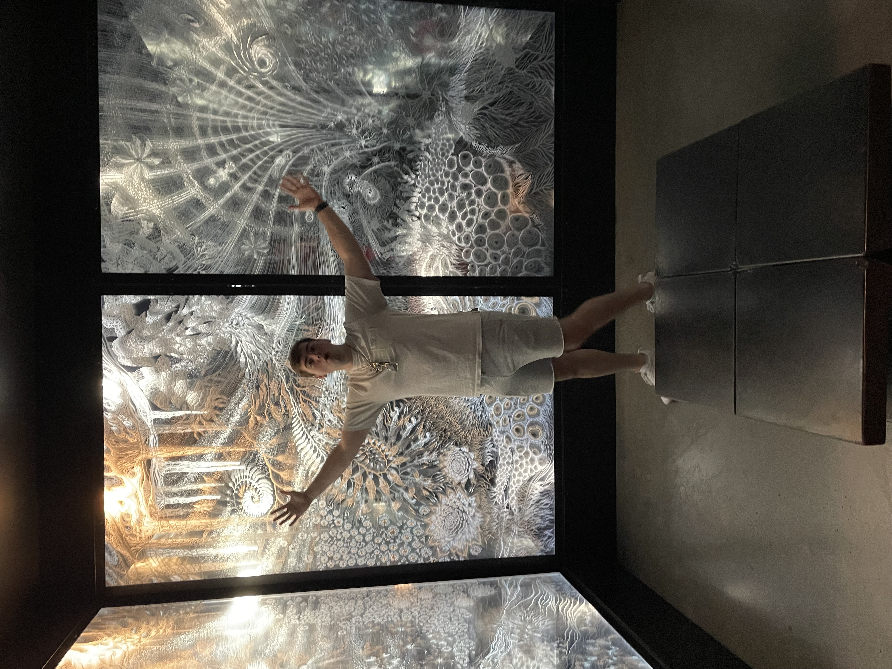
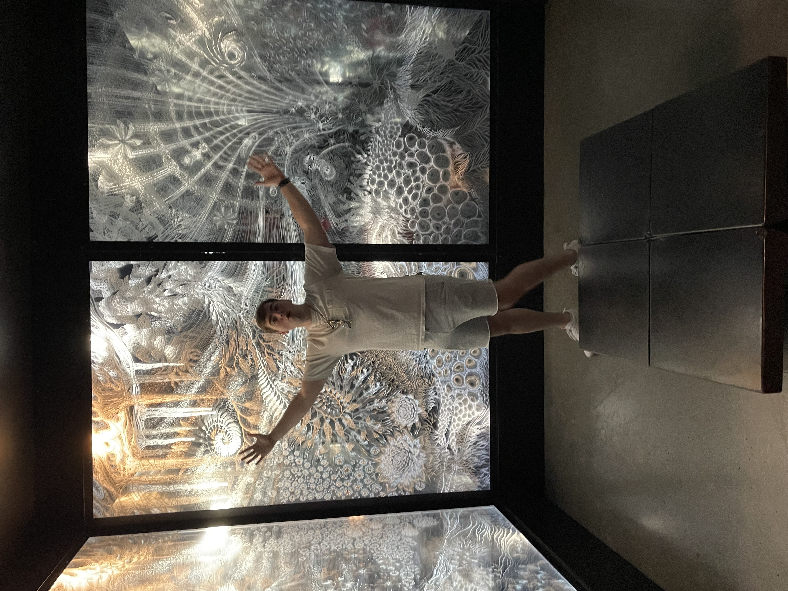

Computer Science student at Siena College with a strong academic record (cumulative GPA 3.70, major GPA 3.45) and a proven track record on the Dean’s List. Proficient in Java, and familiar with Python and GitHub, I have built technical skills in Data Structures, trauma-informed UX design, Advanced Programming, Database Management, and Computer Architecture. I lead a trauma-informed website design team focused on aiding preservice teachers in Ukraine, combining human-centered design with technical problem-solving. My background also includes U.S. Navy service as an AEGIS Fire Controlman in San Diego, where I managed team training and an inventory of critical components, contributing to the functionality of a multi-billion-dollar weapon system. Additionally, I volunteer regularly at Siena’s Annual Programming Contest, supporting smooth event operations.